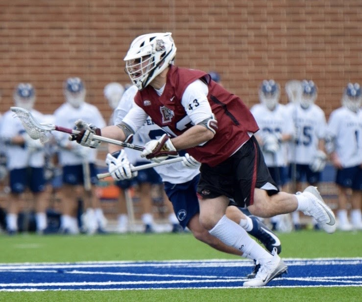
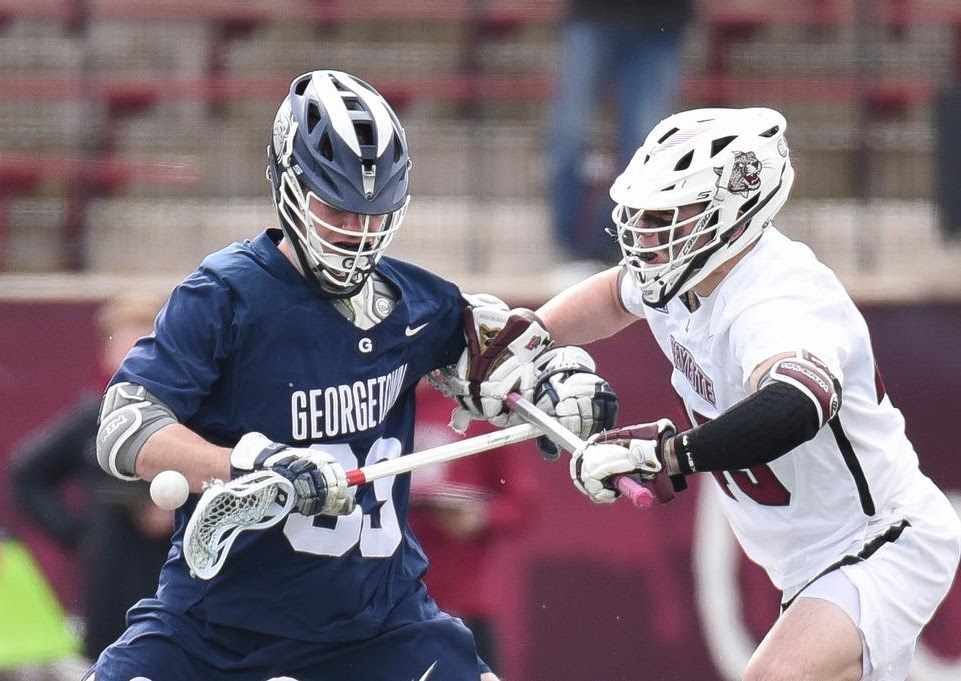

Hi, I'm a first-year Ph.D. Student at the University of Michigan Ann Arbor, where I'm a member of the Strategic Reasoning Group in the AI Lab at Michigan. I am extremely fortunate to be advised by Prof. Michael Wellman.
For undergrad, I attended Lafayette College, graduating in 2021. After Lafayette, I worked full-time while attending Tufts University to pursue my MS in Computer Science, where I had a great experience, worked on interesting research, and met many great people who supported my academic journey while I worked in industry. I graduated from Tufts in 2024.
Summer 2024, I worked as a research intern for the Air Force Research Lab (AFRL). I collaborated with the AI & Autonomous Decision Making Group and the Control Science Center, where I worked on differential game theory & pursuit-evasion games, GNNs, and graph theory. I was hosted by Dr. Scott Nivison.
I spent 2.5 years in industry after college, working as a software engineer at Capital One on their Low Latency Data Store team and developing software for real-time credit card fraud detection. I also spent time at Jefferies working as a Quantitative Researcher in fixed income.
I am also younger brother to Zach Smithline, a current art history PhD student at UC Berkeley (he does cool stuff I don't understand). Check out his website for more information. If you are here looking for Alex Smithline, he is my cousin & he makes cool movies. You can find his work here.
Research Interests
Multi-Agent Systems, Economics and Computation, AI Safety, Reinforcement Learning, and Mathematical Economics & Finance.
Research Projects
Creating a Cooperative AI Policymaking Platform through Open Source Collaboration
Preprint (on going work): arXiv:2412.06936
Abstract: Advances in artificial intelligence (AI) present significant risks and opportunities, requiring improved governance to mitigate societal harms and promote equitable benefits. Current incentive structures and regulatory delays may hinder responsible AI development and deployment, particularly in light of the transformative potential of large language models (LLMs). To address these challenges, we propose developing the following three contributions: (1) a large multimodal text and economic-timeseries foundation model that integrates economic and natural language policy data for enhanced forecasting and decision-making, (2) algorithmic mechanisms for eliciting diverse and representative perspectives, enabling the creation of data-driven public policy recommendations, and (3) an AI-driven web platform for supporting transparent, inclusive, and data-driven policymaking.
Fast and the Furious: Hot Starts in Pursuit-Evasion Differential Games
Abstract: Effectively positioning pursuers in pursuit-evasion games without prior knowledge of evader locations remains a significant challenge. A novel approach that combines game-theoretic control theory with Graph Neural Networks is introduced in this work. By conceptualizing pursuer configurations as strategic arrangements and representing them as graphs, a Graph Characteristic Space is constructed via multi-objective optimization to identify Pareto-optimal configurations. A Graph Convolutional Network (GCN) is trained on these Pareto-optimal graphs to generate strategically effective initial configurations, termed "hot starts". Empirical evaluations demonstrate that the GCN-generated hot starts provide a significant advantage over random configurations. In scenarios considering multiple pursuers and evaders, this method hastens the decline in evader survival rates, reduces pursuer travel distances, and enhances containment, showcasing clear strategic benefits.
Quantal Response-Based Defense in One vs. Many Stackelberg Security Games
During the 2023-2024 academic year, I researched Stackelberg Security Games and Deception. My work focused on finding reductions from Stackelberg Security Games to social planner problems in macroeconomic models.
Understanding Eviction Rates Induced by COVID: A Statistical, Mechanism Design, and Game Theoretic Perspective
During the 2021 academic year, I researched the impacts of COVID-19 on the rental market in Pennsylvania and Easton. I approached this through statistics, econometrics, mechanism design, and game theory. I worked with the city of Easton to help implement these Mechanism Design solutions.
Division I Athletics Experience
During my time at Lafayette, I played four years of Division I lacrosse. I was honored to receive the David Heard award from the Athletic Department at Lafayette College. I was fortunate to play alongside some of the best players and coaches in the world and create lasting memories.

